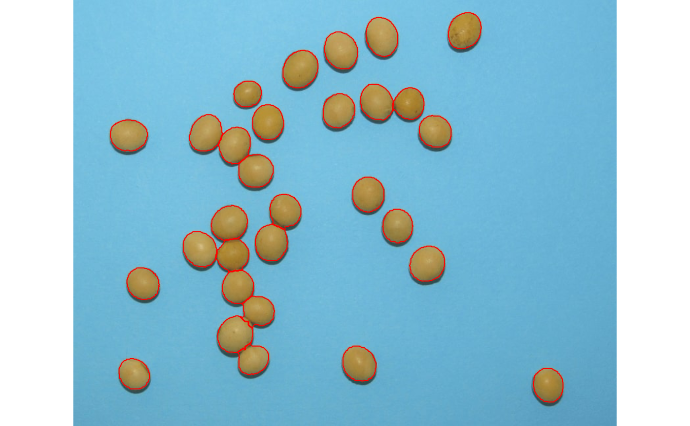
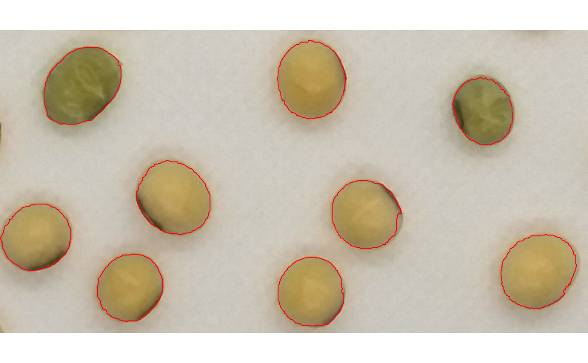
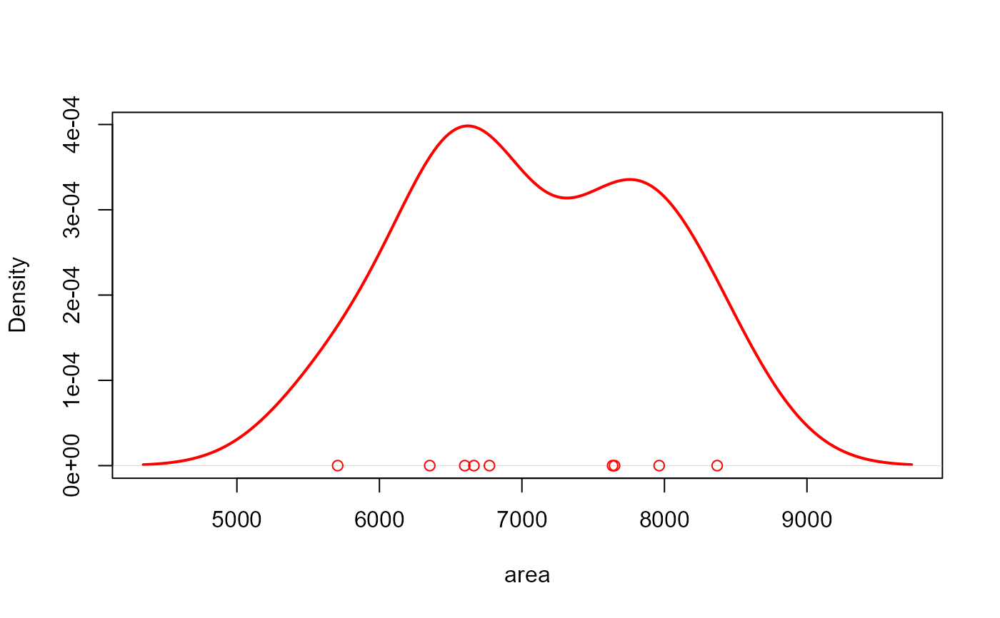

A lighter option to analyze_objects()
Usage
analyze_objects_minimal(
img,
segment_objects = TRUE,
reference = FALSE,
reference_area = NULL,
back_fore_index = "R/(G/B)",
fore_ref_index = "B-R",
reference_larger = FALSE,
reference_smaller = FALSE,
pattern = NULL,
parallel = FALSE,
workers = NULL,
watershed = TRUE,
fill_hull = FALSE,
opening = FALSE,
closing = FALSE,
filter = FALSE,
erode = FALSE,
dilate = FALSE,
invert = FALSE,
object_size = "medium",
index = "NB",
r = 1,
g = 2,
b = 3,
re = 4,
nir = 5,
threshold = "Otsu",
tolerance = NULL,
extension = NULL,
lower_noise = 0.1,
lower_size = NULL,
upper_size = NULL,
topn_lower = NULL,
topn_upper = NULL,
lower_eccent = NULL,
upper_eccent = NULL,
lower_circ = NULL,
upper_circ = NULL,
plot = TRUE,
show_original = TRUE,
show_contour = TRUE,
contour_col = "red",
contour_size = 1,
col_foreground = NULL,
col_background = NULL,
marker = FALSE,
marker_col = NULL,
marker_size = NULL,
save_image = FALSE,
prefix = "proc_",
dir_original = NULL,
dir_processed = NULL,
verbose = TRUE
)
# S3 method for class 'anal_obj_minimal'
plot(
x,
which = "measure",
measure = "area",
type = c("density", "histogram"),
...
)
# S3 method for class 'anal_obj_ls_minimal'
plot(
x,
which = "measure",
measure = "area",
type = c("density", "histogram"),
...
)Arguments
- img
The image to be analyzed.
- segment_objects
Segment objects in the image? Defaults to
TRUE. In this case, objects are segmented using the index defined in theindexargument, and each object is analyzed individually. Ifsegment_objects = FALSEis used, the objects are not segmented and the entire image is analyzed. This is useful, for example, when analyzing an image without background, where anobject_indexcould be computed for the entire image, like the index of a crop canopy.- reference
Logical to indicate if a reference object is present in the image. This is useful to adjust measures when images are not obtained with standard resolution (e.g., field images). See more in the details section.
- reference_area
The known area of the reference objects. The measures of all the objects in the image will be corrected using the same unit of the area informed here.
- back_fore_index
A character value to indicate the index to segment the foreground (objects and reference) from the background. Defaults to
"R/(G/B)". This index is optimized to segment white backgrounds from green leaves and a blue reference object.- fore_ref_index
A character value to indicate the index to segment objects and the reference object. It can be either an available index in
pliman(seepliman_indexes()or an own index computed with the R, G, and B bands. Defaults to"B-R". This index is optimized to segment green leaves from a blue reference object after a white background has been removed.- reference_larger, reference_smaller
Logical argument indicating when the larger/smaller object in the image must be used as the reference object. This only is valid when
referenceis set toTRUEandreference_areaindicates the area of the reference object. IMPORTANT. Whenreference_smalleris used, objects with an area smaller than 1% of the mean of all the objects are ignored. This is used to remove possible noise in the image such as dust. So, be sure the reference object has an area that will be not removed by that cutpoint.- pattern
A pattern of file name used to identify images to be imported. For example, if
pattern = "im"all images in the current working directory that the name matches the pattern (e.g., img1.-, image1.-, im2.-) will be imported as a list. Providing any number as pattern (e.g.,pattern = "1") will select images that are named as 1.-, 2.-, and so on. An error will be returned if the pattern matches any file that is not supported (e.g., img1.pdf).- parallel
If
TRUEprocesses the images asynchronously (in parallel) in separate R sessions running in the background on the same machine. It may speed up the processing time, especially whenpatternis used is informed. Whenobject_indexis informed, multiple sections will be used to extract the RGB values for each object in the image. This may significantly speed up processing time when an image has lots of objects (say >1000).- workers
A positive numeric scalar or a function specifying the number of parallel processes that can be active at the same time. By default, the number of sections is set up to 30% of available cores.
- watershed
If
TRUE(default) performs watershed-based object detection. This will detect objects even when they are touching one other. IfFALSE, all pixels for each connected set of foreground pixels are set to a unique object. This is faster but is not able to segment touching objects.- fill_hull
Fill holes in the binary image? Defaults to
FALSE. This is useful to fill holes in objects that have portions with a color similar to the background. IMPORTANT: Objects touching each other can be combined into one single object, which may underestimate the number of objects in an image.- opening, closing, filter, erode, dilate
Morphological operations (brush size)
dilateputs the mask over every background pixel, and sets it to foreground if any of the pixels covered by the mask is from the foreground.erodeputs the mask over every foreground pixel, and sets it to background if any of the pixels covered by the mask is from the background.openingperforms an erosion followed by a dilation. This helps to remove small objects while preserving the shape and size of larger objects.closingperforms a dilatation followed by an erosion. This helps to fill small holes while preserving the shape and size of larger objects.filterperforms median filtering in the binary image. Provide a positive integer > 1 to indicate the size of the median filtering. Higher values are more efficient to remove noise in the background but can dramatically impact the perimeter of objects, mainly for irregular perimeters such as leaves with serrated edges.
- invert
Inverts the binary image if desired. This is useful to process images with a black background. Defaults to
FALSE. Ifreference = TRUEis use,invertcan be declared as a logical vector of length 2 (eg.,invert = c(FALSE, TRUE). In this case, the segmentation of objects and reference from the foreground usingback_fore_indexis performed using the default (not inverted), and the segmentation of objects from the reference is performed by inverting the selection (selecting pixels higher than the threshold).- object_size
The size of the object. Used to automatically set up
toleranceandextensionparameters. One of the following."small"(e.g, wheat grains),"medium"(e.g, soybean grains),"large"(e.g, peanut grains), and"elarge"(e.g, soybean pods)`.- index
A character value specifying the target mode for conversion to binary image when
foregroundandbackgroundare not declared. Defaults to"NB"(normalized blue). Seeimage_index()for more details. User can also calculate your own index using the bands names, e.g.index = "R+B/G"- r, g, b, re, nir
The red, green, blue, red-edge, and near-infrared bands of the image, respectively. Defaults to 1, 2, 3, 4, and 5, respectively. If a multispectral image is provided (5 bands), check the order of bands, which are frequently presented in the 'BGR' format.
- threshold
The theshold method to be used.
By default (
threshold = "Otsu"), a threshold value based on Otsu's method is used to reduce the grayscale image to a binary image. If a numeric value is informed, this value will be used as a threshold.If
threshold = "adaptive", adaptive thresholding (Shafait et al. 2008) is used, and will depend on thekandwindowsizearguments.If any non-numeric value different than
"Otsu"and"adaptive"is used, an iterative section will allow you to choose the threshold based on a raster plot showing pixel intensity of the index.
- tolerance
The minimum height of the object in the units of image intensity between its highest point (seed) and the point where it contacts another object (checked for every contact pixel). If the height is smaller than the tolerance, the object will be combined with one of its neighbors, which is the highest.
- extension
Radius of the neighborhood in pixels for the detection of neighboring objects. Higher value smooths out small objects.
- lower_noise
To prevent noise from affecting the image analysis, objects with lesser than 10% of the mean area of all objects are removed (
lower_noise = 0.1). Increasing this value will remove larger noises (such as dust points), but can remove desired objects too. To define an explicit lower or upper size, use thelower_sizeandupper_sizearguments.- lower_size, upper_size
Lower and upper limits for size for the image analysis. Plant images often contain dirt and dust. Upper limit is set to
NULL, i.e., no upper limit used. One can set a known area or uselower_size = 0to select all objects (not advised). Objects that matches the size of a given range of sizes can be selected by setting up the two arguments. For example, iflower_size = 120andupper_size = 140, objects with size greater than or equal 120 and less than or equal 140 will be considered.- topn_lower, topn_upper
Select the top
nobjects based on its area.topn_lowerselects thenelements with the smallest area whereastopn_upperselects thenobjects with the largest area.- lower_eccent, upper_eccent, lower_circ, upper_circ
Lower and upper limit for object eccentricity/circularity for the image analysis. Users may use these arguments to remove objects such as square papers for scale (low eccentricity) or cut petioles (high eccentricity) from the images. Defaults to
NULL(i.e., no lower and upper limits).- plot
Show image after processing?
- show_original
Show the count objects in the original image?
- show_contour
Show a contour line around the objects? Defaults to
TRUE.- contour_col, contour_size
The color and size for the contour line around objects. Defaults to
contour_col = "red"andcontour_size = 1.- col_foreground, col_background
Foreground and background color after image processing. Defaults to
NULL, in which"black", and"white"are used, respectively.- marker, marker_col, marker_size
The type, color and size of the object marker. Defaults to
NULL, which plots the object id. Usemarker = "point"to show a point in each object ormarker = FALSEto omit object marker.- save_image
Save the image after processing? The image is saved in the current working directory named as
proc_*where*is the image name given inimg.- prefix
The prefix to be included in the processed images. Defaults to
"proc_".- dir_original, dir_processed
The directory containing the original and processed images. Defaults to
NULL. In this case, the function will search for the imageimgin the current working directory. After processing, whensave_image = TRUE, the processed image will be also saved in such a directory. It can be either a full path, e.g.,"C:/Desktop/imgs", or a subfolder within the current working directory, e.g.,"/imgs".- verbose
If
TRUE(default) a summary is shown in the console.- x
An object of class
anal_obj.- which
Which to plot. Either 'measure' (object measures) or 'index' (object index). Defaults to
"measure".- measure
The measure to plot. Defaults to
"area".- type
The type of plot. Either
"hist"or"density". Partial matches are recognized.- ...
Depends on the function:
For
analyze_objects_iter(), further arguments passed on toanalyze_objects().
Author
Tiago Olivoto tiagoolivoto@gmail.com
Examples
if (interactive() && requireNamespace("EBImage")) {
library(pliman)
img <- image_pliman("soybean_touch.jpg")
obj <- analyze_objects(img)
obj$statistics
}

#> stat value
#> 1 n 3.000000e+01
#> 2 min_area 1.366000e+03
#> 3 mean_area 2.051300e+03
#> 4 max_area 2.436000e+03
#> 5 sd_area 2.300703e+02
#> 6 sum_area 6.153900e+04
#> 7 coverage 1.151122e-01
if (interactive() && requireNamespace("EBImage")) {
library(pliman)
img <- image_pliman("soy_green.jpg")
# Segment the foreground (grains) using the normalized blue index (NB, default)
# Shows the average value of the blue index in each object
rgb <- analyze_objects_minimal(img)
# density of area
plot(rgb)
# histogram of area
plot(rgb, type = "histogram") # or 'hist'
}

